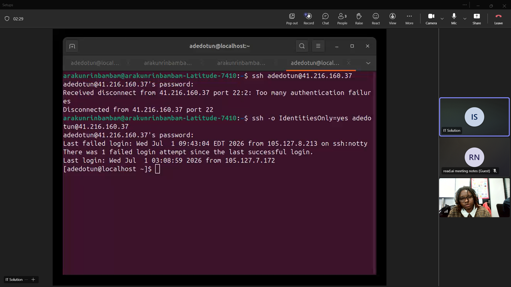
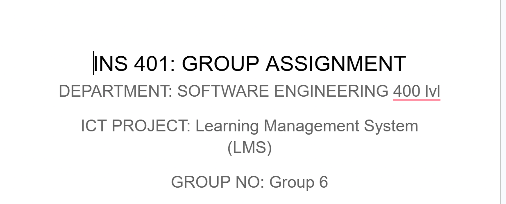

SIBAS: Student Information and Attendance System
A group project that records student attendance, flags students who fall below a threshold, and exports reports as CSV or PDF.
Stack: Python, Streamlit, PostgreSQL, psycopg2
Hello, I am Favour Akinbobola. I'm a Software Engineering student at Pan-Atlantic University, and I like turning messy processes into working software.I got into tech because I like understanding how things work behind the screen, and I learn best by building and fixing real things. Over the past year I've studied databases, Java, artificial intelligence and software design
I'm Favour, a 400-level student in the School of Science and Technology at Pan-Atlantic University. I'm still early in my personal journet but i like how understanding the backends of how a system works which is why i enjoy databases and networking.
I build data-driven applications: database design, backend logic in Python, and clean interfaces on top. My internship in the IT department at VDT gave me real exposure to how software is used at work.
Right now I'm strengthening my frontend skills (HTML, CSS, JavaScript) and learning how mobile and blockchain applications are built.
A group project that records student attendance, flags students who fall below a threshold, and exports reports as CSV or PDF.
Stack: Python, Streamlit, PostgreSQL, psycopg2

During my Internship at VDT Communications Limited, I helped move an existing network configuration onto a new Huawei switch.
Stack: Huawei switches, Network configuration and IT support

A group project assignment where i analysed an ICT project and documented its scope, clearly separating what the project would deliver (in-scope) and what it would not (out-of-scope)
Stack: Project scope, Requirement Analysis, Technical Documentation